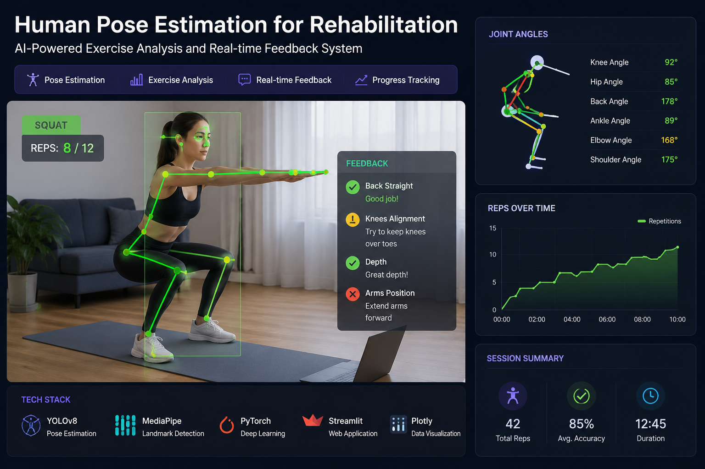

Selected Research & Engineering Projects
Eight selected repositories from my work in human motion, real-time computer vision, 3D perception, biomedical signals, multimodal AI, and robotics.

Human-Pose-Estimation-for-Rehab-Feedback
github.com/ZahraAlipour703/Human-Pose-Estimation-for-Rehab-FeedbackA real-time rehabilitation-oriented computer-vision system for human pose estimation, movement analysis, repetition counting, and exercise feedback.
OpenVLA-Scene
github.com/ZahraAlipour703/OpenVLA-SceneA project focused on open-vocabulary vision-language scene understanding for robotics, exploring multimodal visual perception and semantic understanding in embodied systems.
MedFM-Bench
github.com/ZahraAlipour703/MedFM-BenchA research-oriented repository for studying and evaluating medical foundation models through structured experiments and benchmarking workflows.

LiteHand-YOLO
github.com/ZahraAlipour703/LiteHand-YOLOAn efficient YOLO-based hand detection and tracking project focused on real-time inference and practical deployment under computational constraints.
ArucoTackingIn3DSpace
github.com/ZahraAlipour703/ArucoTackingIn3DSpaceA stereo-vision project combining camera calibration and ArUco-based tracking for real-time spatial pose estimation and 3D motion analysis.
NinaProData
github.com/ZahraAlipour703/NinaProDataA biomedical signal-processing and machine-learning project using NinaPro EMG data to study finger movement classification with temporal neural models.
Stereocalibation
github.com/ZahraAlipour703/StereocalibationA dedicated stereo-camera calibration repository supporting multi-view geometry and 3D computer-vision workflows.
YOLO-mediapipe
github.com/ZahraAlipour703/YOLO-mediapipeA real-time computer-vision pipeline integrating YOLO detection with MediaPipe tracking for human and hand motion analysis.